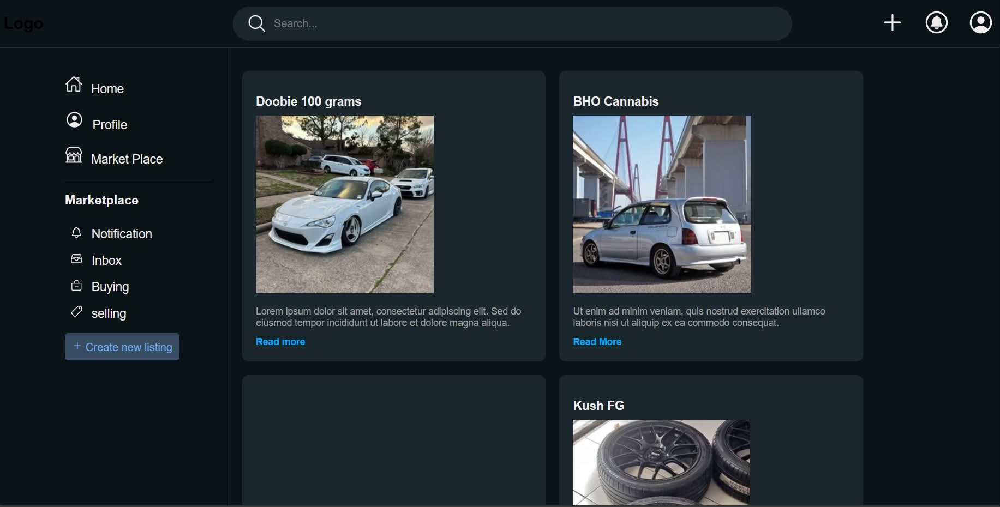

Projects
Here are some of my featured projects with links to the repository or live demo. Each section shows the project title, a short description, and where to explore the code or site.
Tic Tac Toe
A simple interactive Tic Tac Toe game built with clean game logic and a responsive interface.
 View Repository
View Repository
Smoke Detector
A prototype project demonstrating smoke detection logic and alert handling using simulated inputs.
View Repository
Twitter Clone
A social media clone that recreates core Twitter-style posting, timeline display, and basic interaction layout.
View Repository
Website Profile
A personal profile website showcasing portfolio details, contacts, and career highlights with modern layout styling.
View Repository
Website Portfolio
A portfolio website designed to present projects, skills, and personal branding clearly and professionally.
View Repository
MarketPlace

An e-commerce marketplace project that includes item listings, categories, and a backend API structure.
View Repository
Ospital ng Biñan Queuing/Ticketing
A hospital queuing and ticketing system for managing patient flow and service tracking in a medical facility.
View Repository
L.O.K.A.L
A live website project demonstrating a development site for local community services and marketplace features.
Visit Live Site